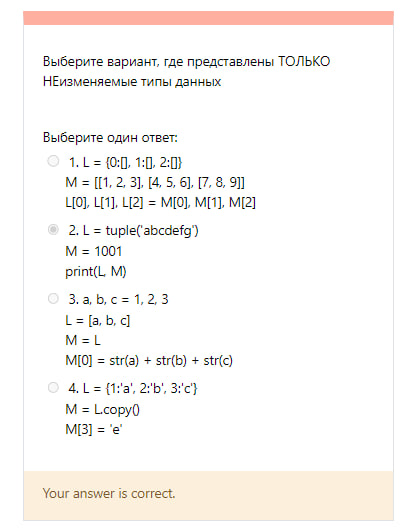
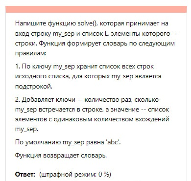
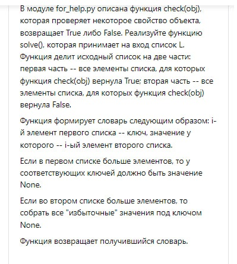

Что это?
Чтобы никто не спрашивал по многу раз, все часто задваемые вопросы будут находиться здесь. Реально сложно всем отвечать, особенно за день-два до дедлайна.
Защита первой лабы по инфе
Сначала решить 3 задачи. Не факт, что они будут именно такими. Точнее, факт, что они будут НЕ такими, однако по уровню сложности будут схожие, так что прочитайте:



Защита в 100 раз проще, чем лаб 1 проги. Преподаватель даже не спросил ничего по поводу лабораторной, а задал лишь 3 вопроса:
1. Чем отличается список от кортежа?
Кортеж - это (по определению) неизменяемый список.
2. Если изменить строку (обратиться по индексу и что-то поменять в ней), то что произойдет?
Произойдет ошибка. Строка - неизменяемый тип данных
3. Можно ли в словаре иметь два одинаковых ключа и почему?
Нет. Объяснение, которое нужно преподавателю, я не знаю, но можете почитать про хеш-таблицы.